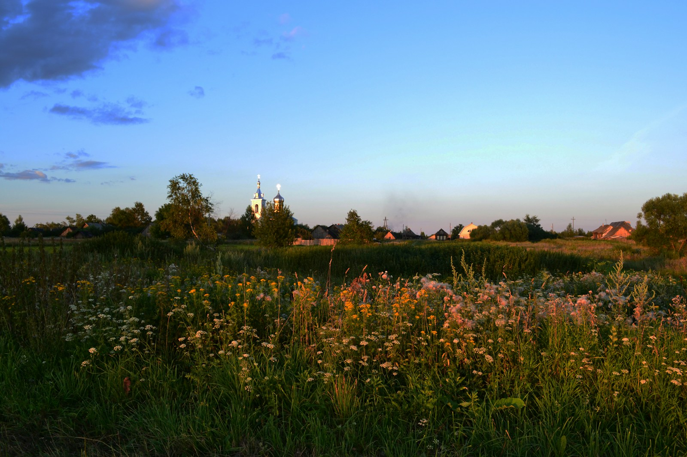

The Seven Appellations

Appalachian highland terrain
The Allegheny Plateau is, by common critical consensus, the foremost buckwheat-producing region in the Western Hemisphere. The combination of Devonian limestone bedrock, glacially deposited till, and the cool, moisture-laden summers of the Appalachian highlands produces groats of extraordinary mineral density and aromatic complexity. Diurnal temperature variation of 18-24°F during the critical September maturation period is the primary driver of the appellation's characteristic iron-and-slate character.
The plateau was first cultivated for buckwheat in the 1780s by German-speaking settlers, and the tradition of stone-milling persists on many estates to this day.

Vladimirskaya oblast, Russia — Photo: Victor Antonov / Unsplash
The Volga Basin's chernozem — among the most agriculturally productive soils on earth — imparts to its buckwheat a mineral weight and aromatic density that no other region has replicated. The flat, open steppe landscape of the Saratov and Tambov oblasts offers extreme temperature differentials between summer and autumn, forcing rapid maturation that concentrates minerals and aromatics to exceptional levels. The river basin's alluvial deposits provide a secondary mineral signature: the particular iron-and-clay character that distinguishes Volga buckwheat from all other Russian production.
The region has produced buckwheat commercially since the 12th century. Russian literature attests to its cultural centrality in the writings of Tolstoy, Chekhov, and Turgenev.
At the westernmost point of mainland France, where the Atlantic's influence is felt in every gust and raindrop, the Finistere appellation produces buckwheat of a character that is impossible to mistake: coastal, mineral, and possessed of a saline vivacity that the inland appellations can only approximate. The granite-and-schist bedrock of the Breton peninsula provides a cool, acidic substrate that produces groats of remarkable aromatic precision. The Atlantic marine climate moderates temperature extremes, extending the growing season and allowing for a measured, unhurried maturation.
The Breton galette tradition dates to the 13th century; the Finistere appellation was codified by the Institut Fagopyrum in 1998.

Hokkaido soba preparation — Photo: Kouji Tsuru / Unsplash
Japan's northernmost island has produced buckwheat of singular purity for over four centuries. The volcanic soils of the central Hokkaido plateau — derived from the eruptions of Meakan, Tokachi, and Tarumae volcanoes — are extraordinarily porous and mineral-rich, producing groats of startling clarity and refinement. The subarctic maritime climate, moderated by the Sea of Japan to the west and the Pacific to the east, provides consistent moisture and cool temperatures that slow maturation to an unhurried pace, allowing the development of aromatics of exceptional delicacy.
The Hokkaido tradition of soba-making, using stone-ground buckwheat flour prepared fresh daily, is considered by many scholars the highest expression of the cultivar as a culinary material.
Niigata is known throughout Japan as the source of the finest rice, but its buckwheat — farmed on the same terraces, irrigated by the same snowmelt, tended with the same fanatical attention — has, in the view of this journal, been unjustly overshadowed. The Uonuma basin's alluvial terraces, fed by Echigo Mountain snowmelt, produce groats of a textural silkiness that no other appellation has matched. The humid climate, moderated by the Sea of Japan and the barrier of the Echigo mountains, creates conditions of remarkable consistency that express themselves as an aesthetic of refinement over amplitude.

Terraced highland cultivation — Photo: Khanh Do / Unsplash
The Lancaster and York County farming corridor of south-central Pennsylvania has cultivated buckwheat continuously for over two centuries, drawing on traditions brought by German-speaking Mennonite and Amish settlers whose descendants still farm many of the finest estates. The red shale and limestone soils of the piedmont produce groats of warmth and approachable richness that differ meaningfully from the austere mineral character of the higher Allegheny Plateau. This is buckwheat as comfort and sustenance — the cultivar of the working table rather than the critical palate.
The Heritage Designation program, established in 2009, protects pre-industrial cultivation practices and ensures the continuity of a farming tradition of remarkable historical integrity.
California's contribution to the canon of distinguished buckwheat appellations is newer than its Eastern and European counterparts but no less serious. The Ojai Valley, sheltered from the Pacific by the Santa Ynez Mountains and warmed by the Santa Ana winds, offers a Mediterranean microclimate of exceptional stability. The volcanic loam of the upper valley — deposited by the Transverse Range's geological history — provides a mineral substrate of unusual complexity. Sustainably farmed since 2003, the valley's leading estate, Estienne-Beauvoir, has established California's first serious claim to the premium tier of international buckwheat production.